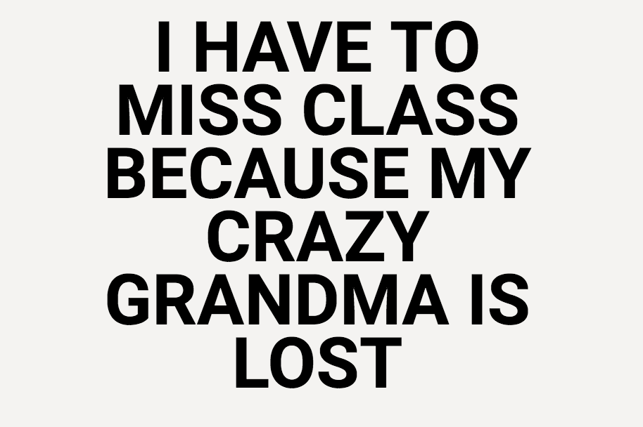
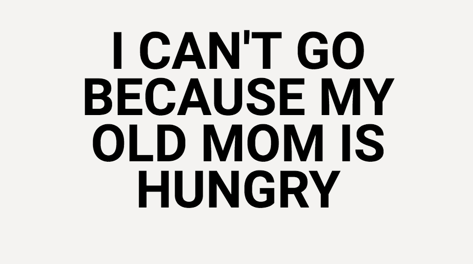
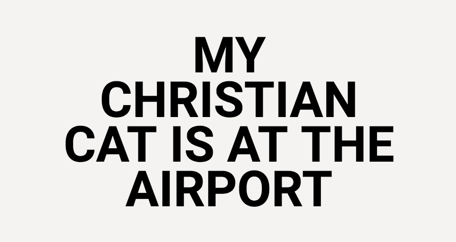
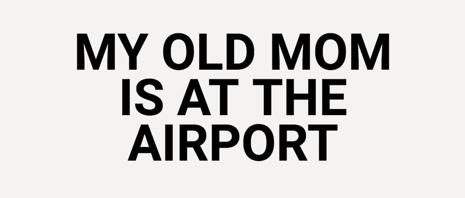

This was a fun study. I used Javascript to create a wacky excuse generator. I created this program because it was simply entertaining not only to create, but also to watch people interact with the program.


DESCRIPTION PENDING


DESCRIPTION PENDING